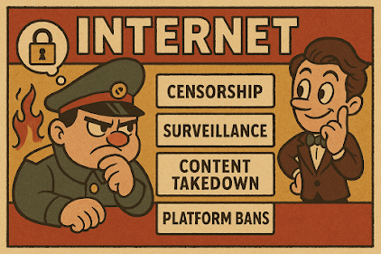

Research
My research uses computational methods to address core questions in three areas: digital governance and censorship, the dynamics of political conflict, and the causes and consequences of democratic backsliding. I specialize in applying natural language processing and machine learning to analyze political behavior and institutions.

Publications
ConfliBERT: Foundation Models for Political Violence Analysis with Patrick T. Brandt, Sultan Alsarra, Vito D’Orazio, Dagmar Heintze, Latifur Khan, Javier Osorio, and Marcus Sianan
Political Analysis
Forthcoming
Developing specialized language models for political conflict analysis that outperform general-purpose LLMs like Gemma 2, Llama 3.1, and Qwen 2.5 in accuracy, precision, and recall while being hundreds of times faster. Link
ConflLlama: Domain-Specific Adaptation of Large Language Models for Conflict Event Classification with Patrick T. Brandt
Research & Politics
Introducing ConflLlama, a specialized variant of Llama 3.1 fine-tuned for political conflict classification, demonstrating superior performance in event coding and conflict analysis tasks compared to traditional approaches. Link
Public Health Advocacy in Times of Pandemic: An Analysis of the Medicare-For-All Debate on Twitter During COVID-19 with Sushant Kumar & Pengfei Zhang
Behavioral Sciences
Analyzing how health advocacy groups adapted their Medicare-For-All messaging on Twitter during the COVID-19 pandemic, revealing distinct approaches to public engagement and narrative adaptation. Link
Under Review
Democracy and Internet Control: Theory and Evidence from Transparency Reports
with Pengfei Zhang
Examining how democratic and authoritarian regimes differ in their approach to internet content moderation, using data from transparency reports. We find that while both regime types remove similar amounts of content, their methods and motivations differ significantly.
Two Types of Censorship? An Assessment of the Informational Autocracy Thesis
with Pengfei Zhang
Testing how Guriev & Treisman’s Informational Autocracy theory applies to internet filtering practices in autocratic nations, with a focus on regime strategies and implementation methods.
Working Papers
Populism and Investment Treaties
with Clint Peinhardt
Investigating how nationalist rhetoric influences countries’ decisions to exit international investment agreements.
IGO Withdrawal Networks
Extending Borzyskowski & Vabulas (2019) to examine network effects in international organization withdrawals.
Media Polarization in International News Coverage
with Arslan Khalid & Kiwan Park
Using machine learning to analyze ideological patterns in international news coverage across 200,000+ articles, examining shifts in sentiment and framing before and after the 2016 US election.
Event Horizon: Revolutionizing Data Annotation with Reinforcement Learning
Introducing a novel reinforcement learning framework built on deepseek’s GRPO, merging political science with advanced AI to create structured, transparent annotations for complex events.
View Model on Hugging Face
Dissertation
“Digital Sovereignty: The Political Economy of Internet Governance”
Slides
Resources
ConfliBERT Documentation
A comprehensive guide for political scientists on using and fine-tuning ConfliBERT for various NLP tasks.
View Manual